无限弹性介质中的圆柱孔
问题描述
注意
要在 3DEC 中查看此项目，请使用菜单命令 。选择“3DEC/ VerificationProblems/ Elastic_Hole”，然后选择“ElasticHole.prj”进行加载。所用的主数据文件（main data files）显示在本示例的末尾。所有数据文件都可在该项目中找到。
本问题涉及确定承受地应力场的无限弹性介质中圆柱孔周围的应力与位移。该问题用于检验各向同性弹性材料模型。
无限体中半径为 1.0 m 的圆柱孔承受压缩性各向异性应力状态：竖向应力 30 MPa，水平应力 15 MPa。假定以下材料属性：
剪切模量（\(G\)）：2.8 GPa
体积模量（\(K\)）：3.9 GPa
密度（\(\rho\)）：2600 kg/m3
假定半径远小于圆柱的长度，从而可将该三维问题与二维平面应变解进行对比。
解析解
无限、各向同性、线弹性介质中圆孔周围的位移与应力由经典的 Kirsch 解给出（例如参见 Jaeger 和 Cook，1976）。
相对于半径为 \(a\) 的洞室中心（图 1（Figure 1）），极坐标为（\(r\)，\(\theta\)）的点处，应力 \(\sigma_r\)、\(\sigma_\theta\) 和 \(\tau_{r\theta}\) 为：
也可在假定平面应变条件下确定位移：
其中 \(u_r\) 为径向向外的位移，\(u_\theta\) 为切向位移（如图 1（Figure 1）所示），\(\nu\) 为泊松比。应力与位移的解析解均在 FISH 函数中实现，这些函数列于“ElasticHole.fis”文件（“ElasticHole.fis”）。）
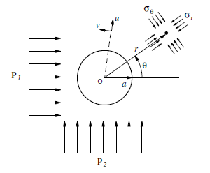
图 1：无限弹性介质中的圆柱孔。
3DEC 模型
用于该分析的 3DEC 模型几何如图 2（Figure 2）所示。模型在 \(x\) 轴方向受约束，因此只能在 \(yz\) 平面内运动（平面应变条件）。模型由 100 个以放射状排列的已连接块体组成。边界选在距孔中心 10 m 处（即五个孔径）。该问题采用三种不同的网格划分类型求解。第一种情况下，采用混合离散化（hex）网格划分，将 100 个块体离散为 1000 个网格单元。图 3（Figure 3）显示了该情况下块体和网格单元的几何。（每个块体有一个 hex 网格单元——即两组相互重叠的 5 个四面体。）第二种情况下，将 100 个块体离散为 5689 个“regular”四面体网格单元。模型一侧的网格单元几何如图 4（Figure 4）所示。第三种情况下，将 100 个块体离散为 5689 个高阶网格单元。在所有情况下，块体均为连接状态（即块体之间的不连续面对模型的变形没有影响）。
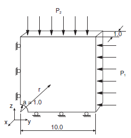
图 2：用于分析弹性介质中圆柱孔的 3DEC 模型几何。

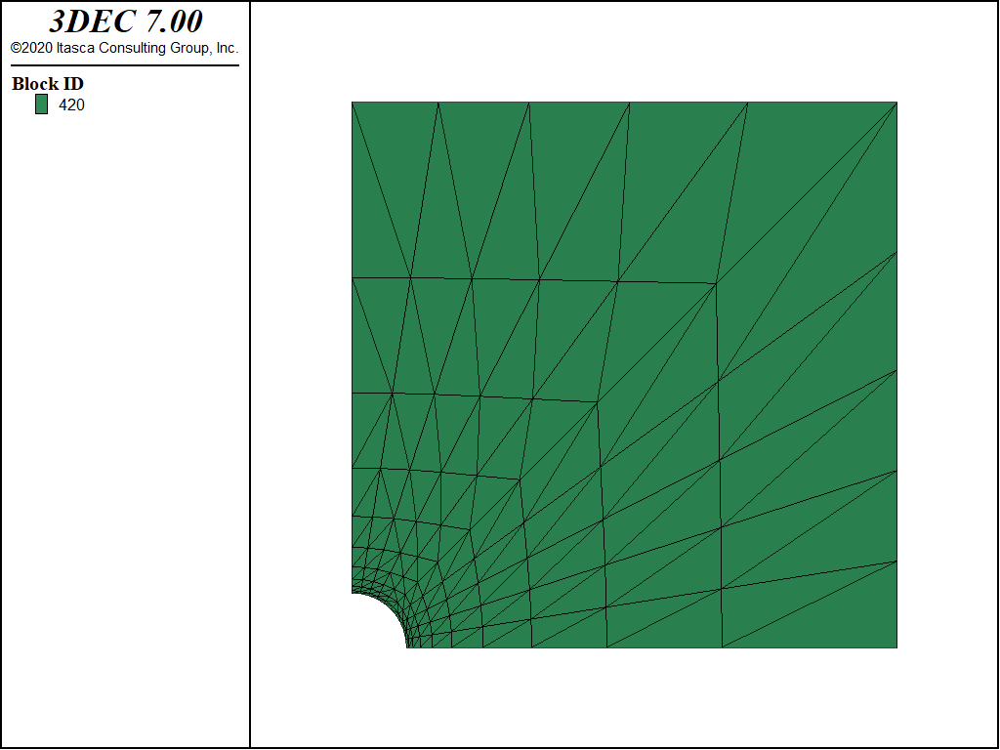
图 3：3DEC 模型中的块体与“quad”网格单元。

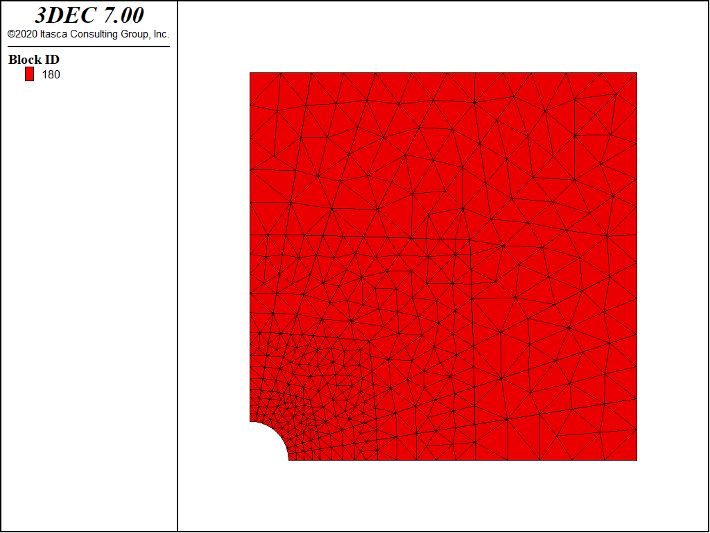
图 4：3DEC 模型中的四面体网格单元。
结果与讨论
从三个 3DEC 模型中提取沿 \(y\) 轴的竖向位移，并与解析解对比。对比结果如图 6（Figure 6）、图 7（Figure 7）和图 8（Figure 8）所示。采用两种不同模型网格划分得到的数值结果，在距洞室中心 2.5 倍半径的范围内与解析结果吻合极好。距洞室中心更远处的误差是模型尺寸有限和边界条件近似所致。
对三种模型网格划分情况数值计算的竖向正应力 \(\sigma_{yy}\) 等值线，与解析解在图 9（Figure 9）、图 10（Figure 10）和图 11（Figure 11）中进行对比。同样，数值结果在洞室附近与解析解吻合得很好。
该验证问题表明，3DEC 可用于准确计算连续弹性介质中的应力与变形。“regular”四面体、高阶四面体以及“hex”网格划分均能给出准确结果，不过 hex 网格划分需要更少数量的网格单元即可达到相同精度。

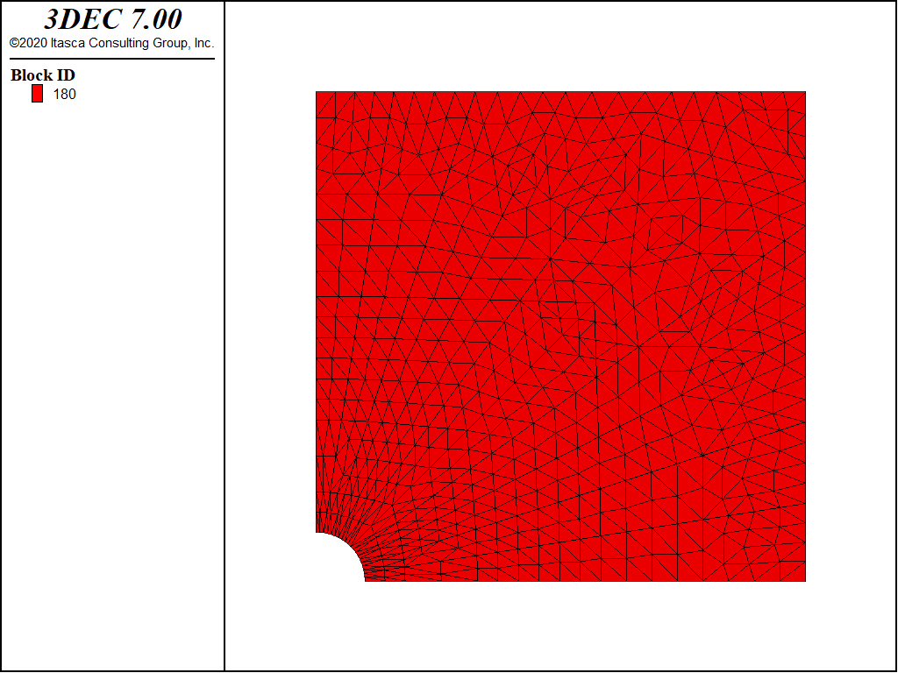
图 5：3DEC 模型中的高阶四面体网格单元。

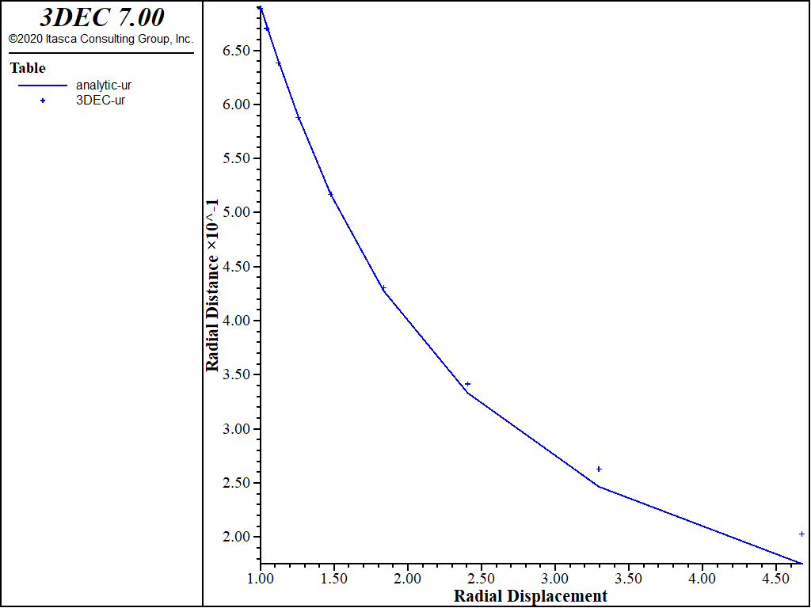
图 6：使用“hex”网格单元时沿 \(y\) 轴的竖向位移对比。

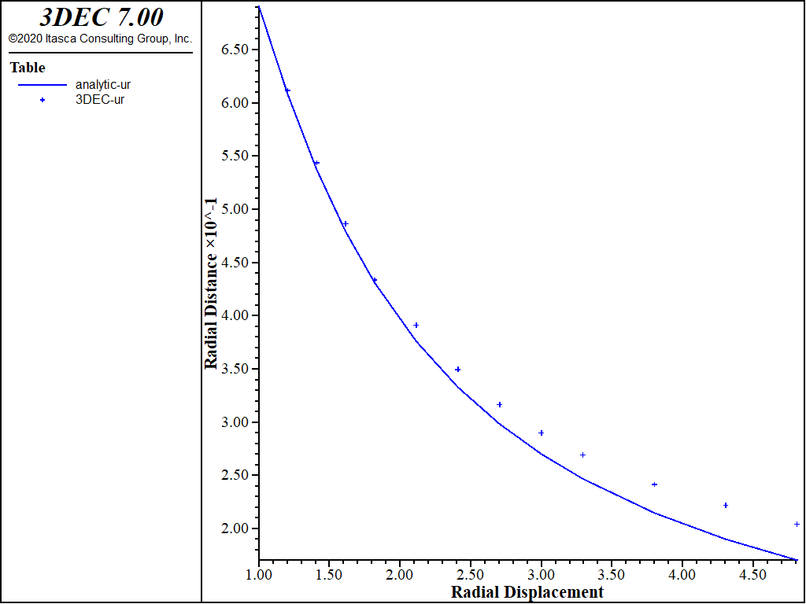
图 7：使用四面体网格单元时沿 \(y\) 轴的竖向位移对比。

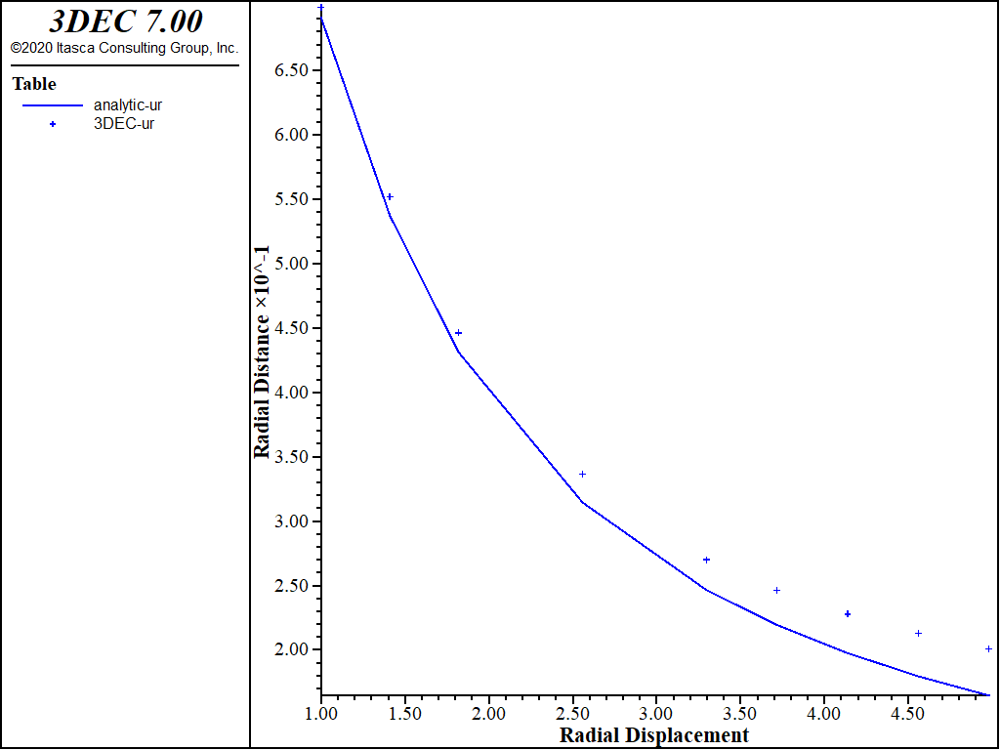
图 8：使用高阶四面体网格单元时沿 \(y\) 轴的竖向位移对比。

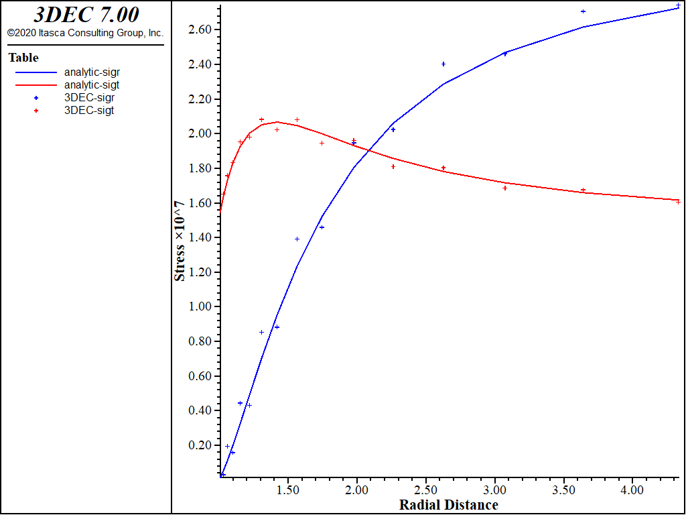
图 9：使用“hex”网格单元时 \(\sigma_{yy}\) 的对比。

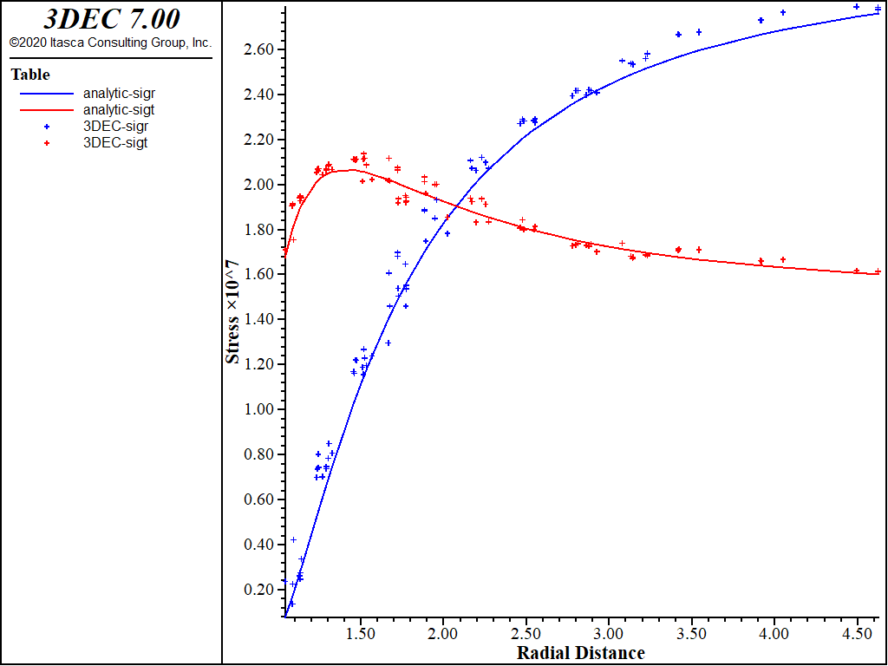
图 10：使用四面体网格单元时 \(\sigma_{yy}\) 的对比。

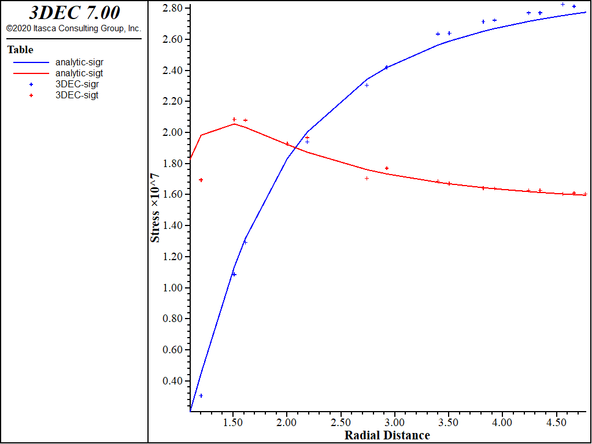
图 11：使用高阶四面体网格单元时 \(\sigma_{yy}\) 的对比。
参考文献
Jaeger, J. C., and N. G. W. Cook. Fundamentals of Rock Mechanics, 3rd Ed. London: Chapman and Hall (1976).
数据文件
ElasticHole-Hex.dat
;==========================================================================
; 验证试验——采用 3DEC 模拟无限大、
; 各向同性、均质弹性介质中的圆孔
; 四边形网格划分
; 弹性块体
;
;==========================================================================
model new
model large-strain off
block create tunnel dip 0 dip-direction 0 radius 1 length 0 1 ...
blocks-axial 1 blocks-radial 10 blocks-tangential 5 ...
boundary 9 radius-ratio 1.4
block delete range cylinder end-1 0 0 0 end-2 0 1 0 radius 0 1
block delete range plane dip 0 dip-direction 0 below
block delete range plane dip 90 dip-direction 90 below
block join on
;
; --- 块体网格划分 ---
;
block zone generate hexahedra divisions 1 1 1
;
; --- 材料参数 ---
;
block zone cmodel assign elastic
block zone property bulk 3.9e9 shear 2.8e9 density 2600
;
; --- 边界条件 ---
block face apply stress -30e6 -30e6 -15e6 0 0 0 range position-x 10
block face apply stress -30e6 -30e6 -15e6 0 0 0 range position-z 10
block gridpoint apply velocity-x 0 range position-x 0
block gridpoint apply velocity-y 0 range position-y 0
block gridpoint apply velocity-y 0 range position-y 1
block gridpoint apply velocity-z 0 range position-z 0
;
;
; --- 初始条件 ---
;
block insitu stress -30e6 -30e6 -15e6 0 0 0
;
model history mechanical unbalanced-maximum
;
model cycle 2000
program call 'ElasticHole.fis'
model save 'ElasticHole-Hex'
;
program return
ElasticHole-tet.dat
;==========================================================================
; 验证试验——采用 3DEC 模拟无限大、
; 各向同性、均质弹性介质中的圆孔
; 四面体网格划分
; 弹性块体
;
;==========================================================================
model new
model large-strain off
block create tunnel dip 0 dip-direction 0 radius 1 length 0 1 ...
blocks-axial 1 blocks-radial 4 blocks-tangential 5 ...
boundary 9 radius-ratio 1.4
block delete range cylinder end-1 0 0 0 end-2 0 1 0 radius 0 1
block delete range plane dip 0 dip-direction 0 below
block delete range plane dip 90 dip-direction 90 below
block join on
;
; --- 块体网格划分 ---
;
block zone generate edgelength 0.20 range position-x 0.0 1.7 position-z 0.0 1.7
block zone generate edgelength 0.30 range position-x 0.0 2.9 position-z 0.0 2.9
block zone generate edgelength 0.50 range position-x 0.0 5.3 position-z 0.0 5.3
block zone generate edgelength 0.8
;
; --- 材料参数 ---
;
block zone cmodel assign elastic
block zone property bulk 3.9e9 shear 2.8e9 density 2600
;
; --- 边界条件 ---
block face apply stress -30e6 -30e6 -15e6 0 0 0 range position-x 10
block face apply stress -30e6 -30e6 -15e6 0 0 0 range position-z 10
block gridpoint apply velocity-x 0 range position-x 0
block gridpoint apply velocity-y 0 range position-y 0
block gridpoint apply velocity-y 0 range position-y 1
block gridpoint apply velocity-z 0 range position-z 0
;
; --- 初始条件 ---
;
block insitu stress -30e6 -30e6 -15e6 0 0 0
;
model history mechanical unbalanced-maximum
;
model cycle 2000
program call 'ElasticHole.fis'
model save 'ElasticHole-tet'
;
program return
ElasticHole-HO.dat
;==========================================================================
; 验证试验——采用 3DEC 模拟无限大、
; 各向同性、均质弹性介质中的圆孔
; 四面体网格划分——高阶网格单元
; 弹性块体
;
;==========================================================================
model new
model config highorder
model large-strain off
block create tunnel dip 0 dip-direction 00 radius 1 length 0 1 ...
blocks-axial 1 blocks-radial 4 blocks-tangential 5 ...
boundary 9 radius-ratio 1.4
block delete range cylinder end-1 0 0 0 end-2 0 1 0 radius 0 1
block delete range plane dip 0 dip-direction 0 below
block delete range plane dip 90 dip-direction 90 below
block join on
; --- 块体网格划分 ---
block zone generate edgelength 1.0
block zone generate high-order-tetra
;
; --- 材料参数 ---
;
block zone cmodel assign elastic
block zone property bulk 3.9e9 shear 2.8e9 density 2600
;
; --- 边界条件 ---
block face apply stress -30e6 -30e6 -15e6 0 0 0 range position-x 10
block face apply stress -30e6 -30e6 -15e6 0 0 0 range position-z 10
block gridpoint apply velocity-x 0 range position-x 0
block gridpoint apply velocity-y 0 range position-y 0
block gridpoint apply velocity-y 0 range position-y 1
block gridpoint apply velocity-z 0 range position-z 0
;
; --- 初始条件 ---
;
block insitu stress -30e6 -30e6 -15e6 0 0 0
;
model history mechanical unbalanced-maximum
;
model cycle 2000
program call 'ElasticHole.fis'
model save 'ElasticHole-HO'
;
program return
ElasticHole.fis
;---------------------------------------------------------------------
; 弹性圆孔问题解析解和数值解的处理
;
; nastr，存储以下内容
; 表 1：解析值 rad/a -sigr
; 表 2：解析值 rad/a -sigt
; 表 3：数值结果 rad/a -sigr
; 取最接近 x 轴的网格单元形心处
; 表 4：数值结果 rad/a -sigt
; 取最接近 x 轴的网格单元形心处
;
; 并在整个网格中计算
; errsr：-sigr 的平均百分比误差
; errst：-sigt 的平均百分比误差
;
; nadis，存储以下内容
; 表 5：解析值 rad/a -ur/a
; 表 6：x 轴上网格点处的数值结果 rad/a -ur/a
;
; 并在整个网格中计算
; errd：位移大小的平均百分比误差
;---------------------------------------------------------------------
fish automatic-create off
;
;--- 读取参数和应力 ---
fish define props
global p1 = 30e6 ; 水平远场应力
global p2 = 15e6 ; 竖直远场应力
global a = 1 ; 隧道半径
global bm = 3.9e9
global sm = 2.8e9
global nu = (3.*bm-2.*sm)/(6.*bm+2.*sm)
end
; =================================================
; 应力
; =================================================
fish define nastr
local numrad = 0
local tab1 = table.get(1)
local tab2 = table.get(2)
local tab3 = table.get(3)
local tab4 = table.get(4)
table.label(tab1) = 'analytic-sigr'
table.label(tab2) = 'analytic-sigt'
table.label(tab3) = '3DEC-sigr'
table.label(tab4) = '3DEC-sigt'
global errsr
global errst
errsr = 0.0
errst = 0.0
loop foreach local iz_ block.zone.list
local mark = 0
local igp
loop igp (1,4)
local gpind = block.zone.gp(iz_,igp)
if block.gp.pos.z(gpind) < 0.001 then
mark = mark + 1
end_if
end_loop
local rad = math.sqrt(block.zone.pos.x(iz_)^2 + ...
block.zone.pos.z(iz_)^2)
local theta_ = math.atan2(block.zone.pos.z(iz_),block.zone.pos.x(iz_))
local o_r = a/rad
local o_r2 = o_r*o_r
local o_r4 = o_r2*o_r2
local sigre = 0.5*(p1+p2)*(1-o_r2)
sigre = sigre+0.5*(p1-p2)*(1.-4.*o_r2+3.*o_r4)*math.cos(2.0*theta_)
local sigte = 0.5*(p1+p2)*(1+o_r2)
sigte = sigte-0.5*(p1-p2)*(1.+3.*o_r4)*math.cos(2.0*theta_)
local stemp1 = 0.5*(block.zone.stress.xx(iz_) + ...
block.zone.stress.zz(iz_))
local stemp2 = 0.5*(block.zone.stress.xx(iz_) - ...
block.zone.stress.zz(iz_))
local stemp3 = block.zone.stress.xz(iz_)*math.sin(2.0*theta_)
local sigr = -(stemp1 + stemp2*math.cos(2.0*theta_)+stemp3)
local sigt = -(stemp1 - stemp2*math.cos(2.0*theta_)-stemp3)
if mark > 2
if rad < 5.0
numrad = numrad + 1
table(tab1,rad) = sigre
table(tab2,rad) = sigte
table(tab3,rad) = sigr
table(tab4,rad) = sigt
end_if
end_if
local err = math.abs(sigr - sigre) / p1
errsr = errsr + err
err = math.abs(sigt - sigte) / p1
errst = errst + err
end_loop
errsr = errsr * 100. / block.zone.num
errst = errst * 100. / block.zone.num
end
; =================================================
; 位移
; =================================================
fish define nadis
global numrad
numrad = 0
local tab5 = table.get(5)
local tab6 = table.get(6)
table.label(tab5) = 'analytic-ur'
table.label(tab6) = '3DEC-ur'
; 用于误差计算的边界处解
local dism = 0.25*((p1+p2)+(p1-p2)*(4.*(1.-nu)-1.0))/sm
global errd = 0.0
local count_ = 0
loop foreach local igp_ block.gp.list
count_ = count_ + 1
local mark = 0
if block.gp.pos.z(igp_) < 0.001 then
if block.gp.pos.y(igp_) < 0.001 then
mark = 1
end_if
end_if
local rad = math.sqrt(block.gp.pos.x(igp_)^2 + block.gp.pos.z(igp_)^2)
local theta_ = math.atan2(block.gp.pos.z(igp_),block.gp.pos.x(igp_))
local o_r = a/rad
local dise = (p1+p2)+(p1-p2)*(4.*(1.-nu)-o_r*o_r)*math.cos(2.0*theta_)
dise = 0.25*dise*o_r*a/sm
local dis = math.sqrt(block.gp.disp.x(igp_)^2 + ...
block.gp.disp.z(igp_)^2)
local err = math.abs(dis - dise)
errd = errd + err
if mark = 1 then
if rad < 5.0
numrad = numrad + 1
table(tab5,rad) = 100*dise
table(tab6,rad) = 100*dis
end_if
end_if
end_loop
errd = errd * 100. / (dism*count_)
end
;
[props]
[nastr]
[nadis]
;
fish list [numrad]
fish list [errsr]
fish list [errst]
fish list [errd]
fish automatic-create on
; 文件结束
⇐ Block with a Slipping Crack under Cyclic Loading | Cylindrical Hole in an Infinite Mohr-Coulomb Medium ⇒
| 这些内容对您有帮助吗？… | FLAC3D © 2019, Itasca | 原文更新于 2020 年 10 月 8 日 |